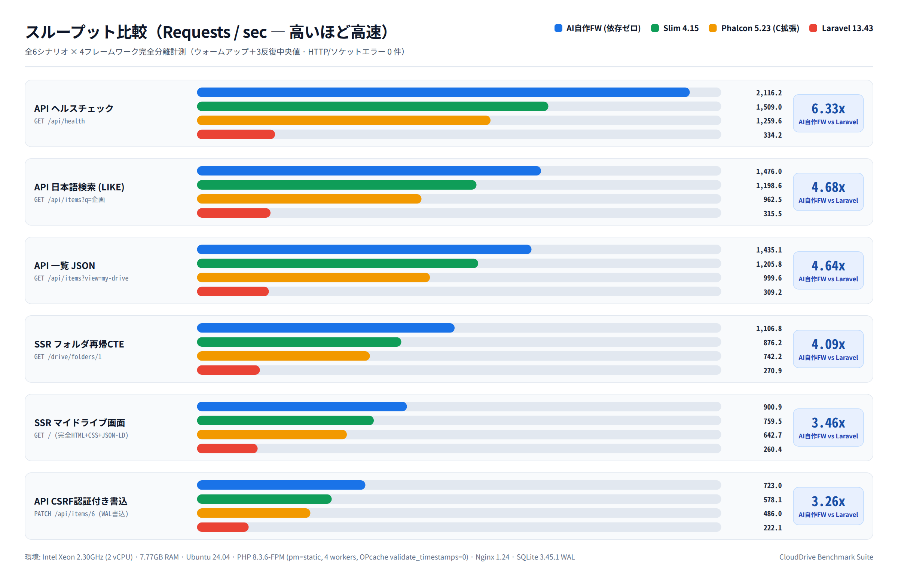
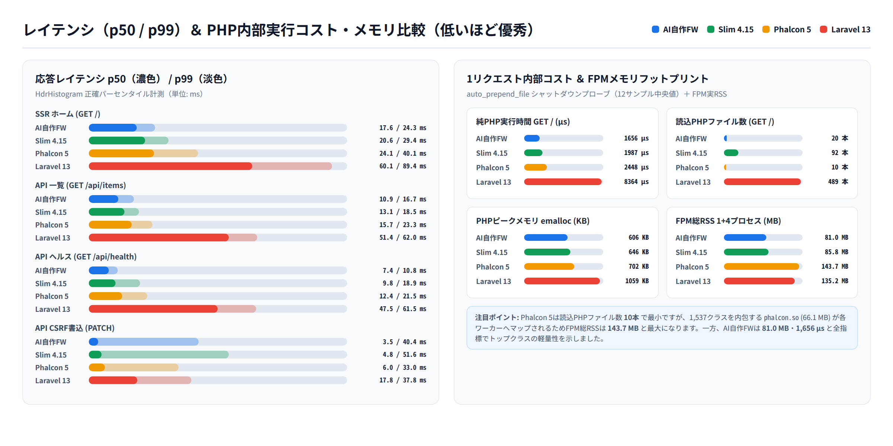
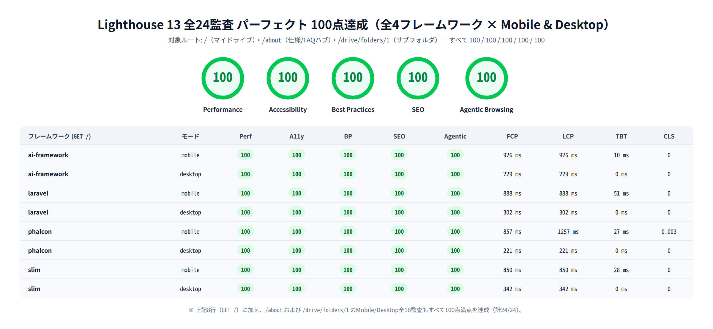
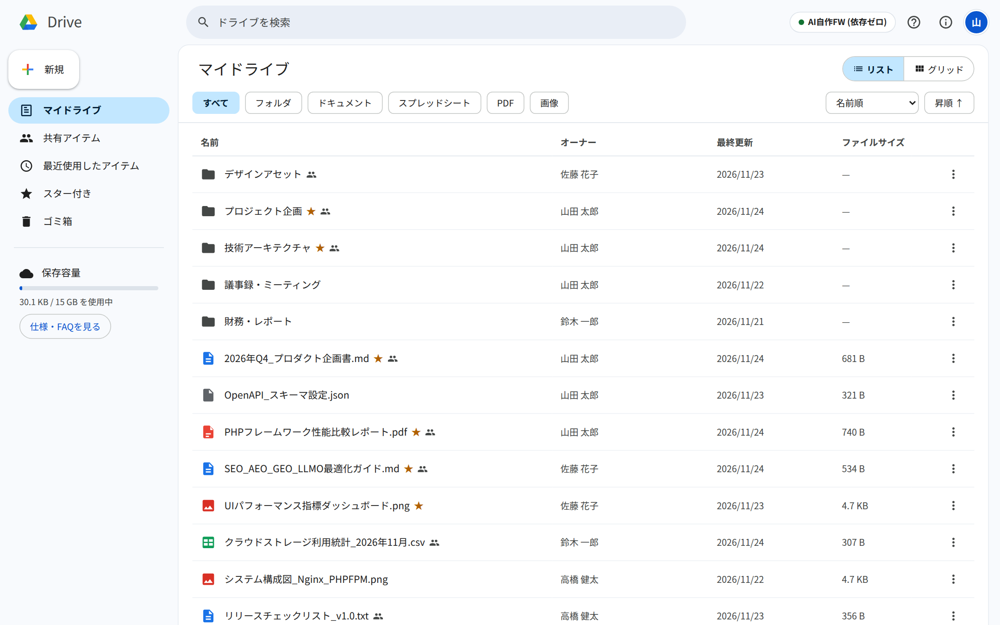
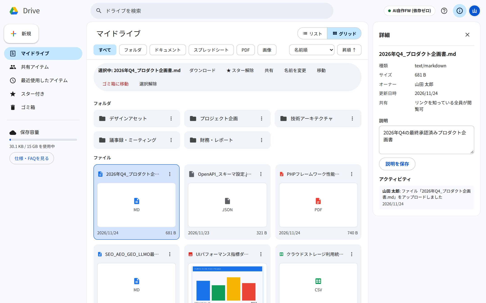
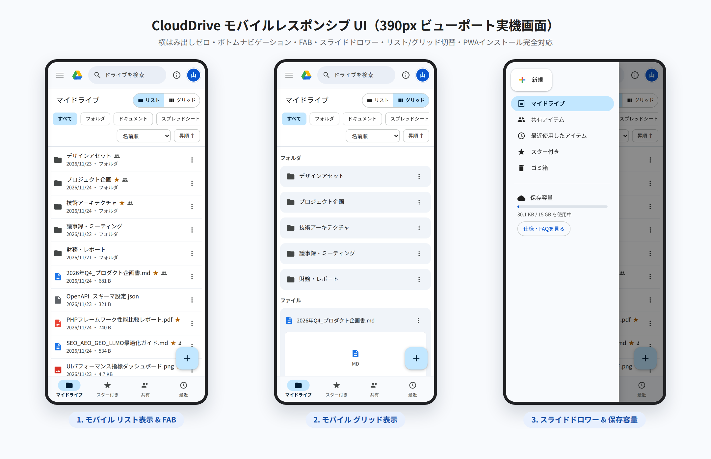
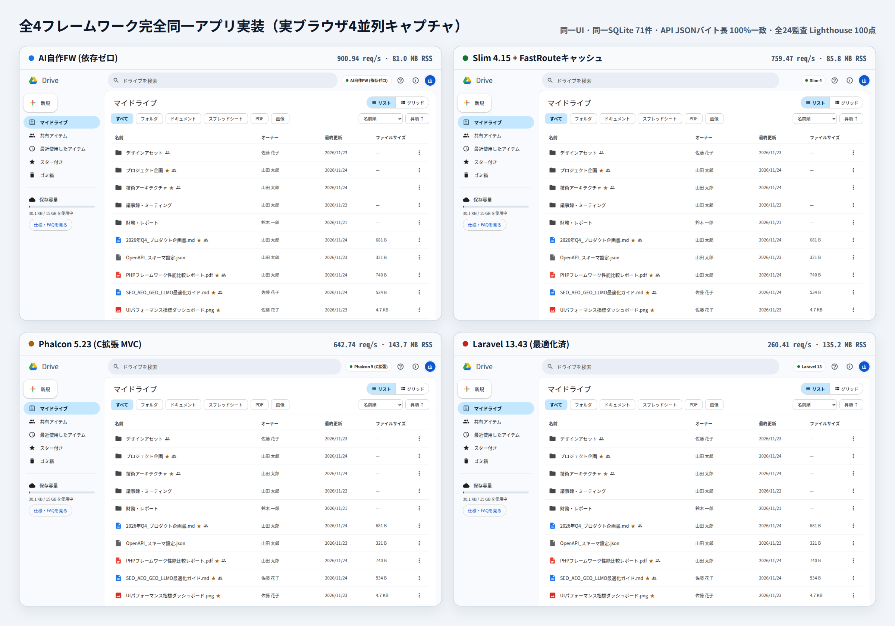

ベンチマーク ＆ Lighthouse 100点スコアカード

全6シナリオ スループット比較（AI自作FWがLaravel比 3.26x〜6.33x、全72本計測エラー0件）

レイテンシ（p50 / p99）およびPHP内部実行時間・読込ファイル数・FPM総RSS比較

全4フレームワーク × 3ルート × Mobile/Desktop 全24監査で100点満点
CloudDrive UI スクリーンショット

デスクトップ リスト表示（Google Drive Material Design 3 UI）

デスクトップ グリッド表示 ＆ 詳細・アクティビティサイドパネル

モバイル 390px UI（リスト表示・グリッド表示・スライドドロワー）

AI自作FW / Slim 4 / Phalcon 5 / Laravel 13 全4実装の並列実機キャプチャ